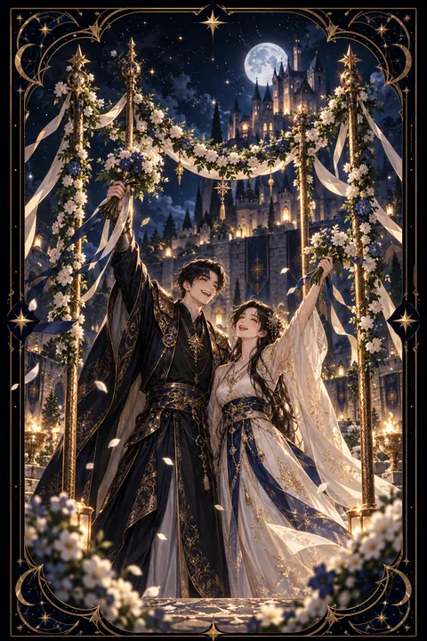

완드 4 카드 — 함께 누리는 안정과 축하
완드 4 카드 한눈에 보기
완드 4 카드 상징 읽기

동네보살의 카드 그림은 전통 라이더–웨이트 덱의 뜻을 새 그림으로 옮긴 것입니다. 아래 상징 설명은 전통 덱의 그림을 기준으로 합니다.
완드 4에는 꽃과 과일로 엮은 화환이 네 개의 지팡이 위에 걸려 있어 마치 혼례나 잔치의 입구처럼 보입니다. 땅에 단단히 선 네 지팡이는 흔들림 없는 기반과 안정된 구조를 뜻합니다.
화환 너머에서는 두 사람이 꽃다발을 머리 위로 높이 들어 올리며 기쁨을 표현하고 있습니다. 그 뒤로 사람들이 모여 있고 성이 서 있어 공동체와 보금자리가 함께하는 축제의 분위기를 전합니다.
밝은 노란 배경은 즐거움과 활기를 나타내며 화환에 달린 열매는 노력 끝에 얻은 수확을 상징합니다. 네 개의 지팡이가 이루는 문은 한 단계를 무사히 마치고 다음 장으로 들어서는 통과의 의미를 담고 있습니다. 이 카드는 혼자 이룬 성공보다 여럿이 함께 나누는 기쁨에 무게를 둡니다. 화환을 엮은 꽃과 잎은 풍요로운 계절의 기운을 전합니다.
완드 4 카드 정방향 뜻
정방향 완드 4는 한 단계를 마무리하고 함께 기뻐할 일이 생긴다는 신호입니다. 목표 달성이나 이사나 결혼이나 합격처럼 삶의 매듭을 짓는 경사가 찾아오기 쉬우며 가족과 동료 사이에 화목한 분위기가 흐릅니다.
이 카드는 안정된 터전을 강조합니다. 그동안의 노력이 기반을 다져 준 덕분에 마음 편히 쉴 수 있는 자리가 마련되는 시기입니다. 집이나 일터에서 소속감을 느끼고 자신이 받아들여지고 있다는 확신이 생깁니다.
기쁜 일은 나눌수록 커집니다. 성취를 혼자 조용히 넘기기보다 도와준 사람들에게 감사를 전하고 작은 자리라도 마련해 함께 축하해 보세요. 이렇게 쌓은 유대가 다음 도전을 버티게 하는 든든한 울타리가 됩니다. 경사가 있다면 미루지 말고 제때 기념해 두는 것이 이 카드의 기운을 온전히 누리는 방법입니다.
완드 4 카드 역방향 뜻
역방향 완드 4는 축하할 일이 미뤄지거나 기대했던 화합이 이루어지지 않는 상황을 보여 줍니다. 가족이나 모임 안에서 의견이 엇갈려 분위기가 어수선해질 수 있고 자신이 설 자리가 없다고 느낄 수도 있습니다.
이사나 이직처럼 생활의 터전이 바뀌는 과도기에도 이 카드가 나오곤 합니다. 익숙한 울타리를 떠나 새 자리에 적응하는 동안 불안정한 감정이 따라올 수 있습니다.
그렇다고 기쁨이 사라지는 것은 아닙니다. 큰 잔치 대신 조촐한 자리에서 진심을 나누는 것이 더 의미 있을 수 있습니다. 겉모습보다 속마음이 편안한 관계를 우선하고 서먹해진 사이가 있다면 먼저 다가가 보세요. 작은 화해와 정돈이 흔들린 기반을 다시 세워 줍니다. 생활의 터전이 흔들릴수록 매일 반복하는 작은 일상이 마음을 붙잡아 주는 닻이 되어 줍니다.
연애에서 완드 4 카드
솔로라면 즐거운 모임이나 축하 자리에서 좋은 인연을 만날 가능성이 큽니다. 지인의 결혼식이나 집들이처럼 사람들이 모이는 행사에 적극적으로 참석해 보세요. 들뜬 잔치 기분 속에서 스스럼없이 호감이 싹트는 흐름입니다.
연인이 있다면 둘의 관계가 안정되고 한 단계 진전하는 경사스러운 흐름입니다. 기념일을 함께 축하하거나 서로의 가족을 만나는 자리가 생길 수 있으며 결혼이나 동거처럼 함께할 보금자리를 꺼내 보기에도 알맞은 시기입니다. 뒤집힌 배열에서는 주변 사정으로 계획이 늦어지거나 가족의 반대 같은 외부 요인이 생길 수 있으니 두 사람의 마음을 먼저 단단히 맞춰 두는 것이 중요합니다. 둘만의 추억이 깃든 장소를 다시 찾아 기념하는 것도 좋은 방법입니다. 작은 기념일이라도 함께 챙기다 보면 두 사람의 울타리가 오래 단단하게 유지됩니다.
재회·속마음 질문에서 완드 4 카드
재회 질문에서 완드 4가 나오면 함께했던 편안한 기억이 다시 관계를 이어 줄 수 있다는 뜻입니다. 두 사람이 즐거웠던 장소나 공통의 지인이 모이는 자리가 재회의 계기가 되기 쉽습니다. 무거운 대화보다 가볍고 밝은 분위기에서 안부를 건네는 편이 좋습니다. 상대 역시 편안했던 시절의 온기를 쉽게 잊지 못한 채 지내는 중일지 모릅니다. 거꾸로 나왔다면 다시 만나더라도 예전의 갈등이 되풀이될 수 있으니 무엇이 불편했는지 차분히 짚어 보는 과정이 필요합니다. 다시 만나게 된다면 작은 기념일이나 함께 웃었던 추억을 가볍게 꺼내 보세요. 부담 없는 따뜻함이 닫혀 있던 마음을 여는 열쇠가 될 수 있습니다.
일·금전에서 완드 4 카드
일과 직장에서는 프로젝트 완수나 목표 달성이나 승진처럼 노력이 인정받는 경사가 찾아오는 흐름입니다. 팀 분위기가 좋아지고 함께 일하는 사람들과의 유대가 깊어집니다. 성과를 기념하는 자리를 마련하면 다음 일의 동력이 커집니다.
금전 면에서는 안정된 수입과 기반이 다져지는 시기입니다. 집 마련이나 생활 환경 개선처럼 보금자리와 관련된 지출이 생길 수 있으며 계획적으로 준비했다면 만족스러운 결과를 얻습니다. 다만 축하 자리나 행사 비용이 불어나기 쉬우니 형편에 맞는 선을 정해 두는 것이 좋습니다. 성과를 함께 나눈 경험은 다음 협업을 훨씬 수월하게 만드는 밑거름이 됩니다. 작은 성과라도 함께한 사람들과 나누면 다음 일의 문이 쉽게 열립니다.
완드 4 카드는 예일까 아니오일까
한 고비를 넘기고 함께 기뻐하는 경사의 카드여서 바라는 일이 순조롭게 이뤄진다고 풉니다. 뒤집혀 나와도 규모가 작아지거나 시기가 늦어질 뿐인 경우가 많아 조건부로 읽습니다.
자주 묻는 질문
완드 4 카드 역방향은 나쁜 뜻인가요?
역방향 완드 4는 축하할 일이 미뤄지거나 기대했던 화합이 이루어지지 않는 상황을 보여 줍니다. 가족이나 모임 안에서 의견이 엇갈려 분위기가 어수선해질 수 있고 자신이 설 자리가 없다고 느낄 수도 있습니다.
완드 4 카드가 연애 질문에 나오면요?
솔로라면 즐거운 모임이나 축하 자리에서 좋은 인연을 만날 가능성이 큽니다. 지인의 결혼식이나 집들이처럼 사람들이 모이는 행사에 적극적으로 참석해 보세요. 들뜬 잔치 기분 속에서 스스럼없이 호감이 싹트는 흐름입니다.
타로 카드는 어떻게 뽑나요?
타로 카드 페이지에서 78장을 섞으면 그중 22장이 펼쳐집니다. 마음이 가는 세 장을 고르면 과거·현재·미래 자리에 놓이고, 한 장씩 뒤집어 자리와 방향에 맞는 풀이를 읽습니다. 정방향과 역방향은 섞는 순간 정해집니다.